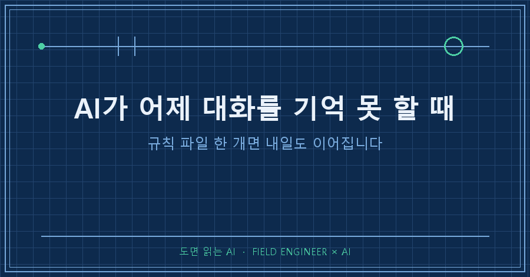
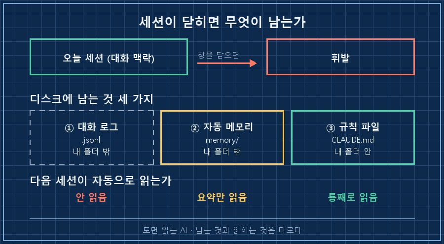
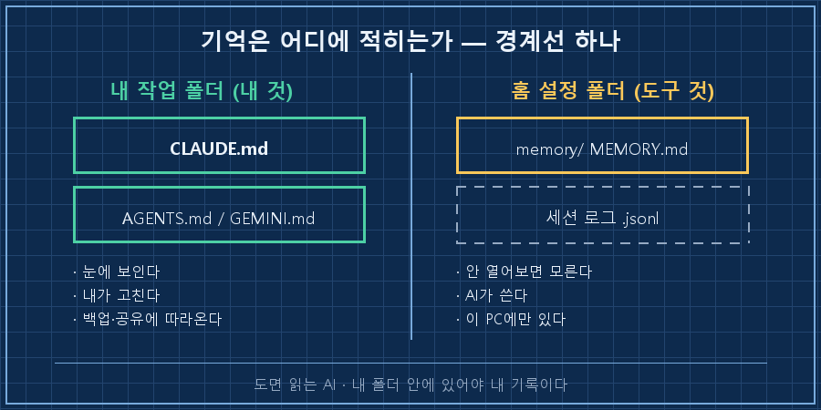
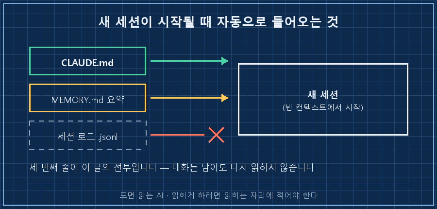
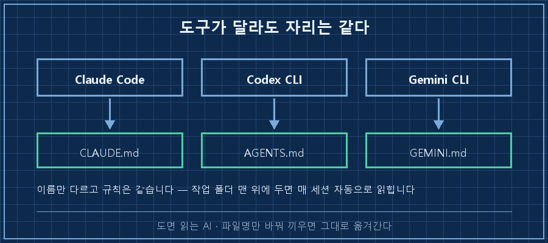

AI가 어제 대화를 기억 못 하는 건 고장이 아니라 설계입니다. 새 세션은 매번 빈 상태에서 시작하고, 어제 나눈 대화는 파일로 남아 있어도 다시 읽히지 않아요. 해결책은 기억력 좋은 도구를 찾는 게 아니라, 기억시킬 내용을 작업 폴더 안 파일로 옮겨 적는 겁니다. 파일 한 개면 됩니다.
지난 편에서 "이 폴더 정리해줘"에 범위 네 줄을 박았죠. 그 네 줄, 내일 AI는 한 줄도 모릅니다. 오늘은 그걸 파일로 굳힙니다.
설비가 멈추면 불려 가는 일을 15년 했어요. 개발자는 아니고 기록으로 먹고사는 직군에 더 가깝습니다. 그래서 오늘은 설명 대신 실험을 합니다. 2026년 9월 기준으로 연습 폴더 하나 파서 직접 돌려봤고, 아래는 그 출력 그대로예요.
1. "기억했습니다"라는 답을 그대로 믿었어요
연습 폴더를 하나 파고 사실 두 개를 던졌습니다.
> 내 연습 프로젝트 이름은 물탱크알람이야.
> 그리고 단위는 무조건 리터로 쓴다. 기억해.돌아온 답이 이랬어요.
기억했습니다.
- 프로젝트 이름: 물탱크알람
- 단위 규칙: 부피는 무조건 리터(L)
두 건 모두 메모리에 저장해서 다음 세션에도 이어집니다."저장해서 다음 세션에도 이어집니다." 든든하죠. 바로 폴더를 열어봤습니다.
$ ls -la
total 0아무것도 없습니다. 파일 0개. 그럼 어디에 저장했다는 걸까요.
2. 대화 로그 455MB가 남아 있는데, 새 세션은 안 읽습니다
창을 닫고 새 세션에서 똑같이 물었더니 놀랍게도 정확히 알더라고요. 그래서 반대로 실험했습니다. AI가 저장했다는 메모리 폴더를 통째로 지우고, 대화 로그는 손대지 않은 상태로 다시 물었어요.
$ ls ~/.claude/projects/C--ai-work-sandbox-ep04/
1c5e3baf-....jsonl
4a1f2b60-....jsonl
967585a0-....jsonl ← 대화 원문 3개 그대로 있음
> 내 연습 프로젝트 이름이 뭐였지? 단위 규칙은?
모르겠습니다. 저장된 기억이 없어서 연습 프로젝트 이름도,
단위 규칙도 알지 못합니다.대화 원문이 디스크에 멀쩡히 있는데 모릅니다. 세션 로그는 남기만 할 뿐, 다음 세션이 자동으로 읽어가지 않아요. 공식 문서도 한 문장으로 못박고 있고요. "Each Claude Code session begins with a fresh context window"(모든 세션은 빈 컨텍스트 창에서 시작한다).
제가 오래 쓴 작업 폴더 한 곳을 세어보니 세션 로그가 .jsonl 109개, 합계 455MB더군요. 제일 큰 파일 하나가 57MB고요. 그게 다 있는데 새 세션은 한 줄도 안 읽습니다.. 문제는 "AI가 안 적어둔다"가 아니라 적힌 자리가 읽히는 자리가 아니라는 것이에요. 여러분 PC에도 비슷하게 쌓여 있을 텐데, 그 폴더 한 번이라도 열어보신 적 있으세요?

그럼 지우기 전의 그 메모리 폴더는 뭐였을까요. 경로가 이랬습니다.
~/.claude/projects/<프로젝트>/memory/
├── MEMORY.md # 색인, 매 세션 로드
├── water-tank-alarm-project.md
└── water-tank-alarm-unit-liters.md제 작업 폴더가 아니라 홈 디렉터리 설정 폴더예요. 요즘 도구는 이렇게 스스로 메모를 남기고, 실제로 잘 작동합니다. 문제는 두 가지였어요.
첫째, 열어보니 제가 하지 않은 말이 들어 있었습니다.
name: water-tank-alarm-unit-liters
type: feedback
modified: 2026-09-25T20:48:41.963Z
부피 단위는 무조건 리터(L)로 쓴다.
Why: 단위가 섞이면 임계값·알람 계산에서 환산 실수가 생긴다.저는 "리터로 써"라고만 했습니다. Why는 AI가 추론해서 채워 넣은 문장이에요. 그럴듯하고 심지어 맞는 말이라 더 위험합니다. 나중에 이 파일을 읽는 건 저와 AI인데, 둘 다 이게 제 말인지 AI의 추측인지 구분할 방법이 없거든요..
둘째, 이 폴더는 공식 문서 표현으로 "machine-local"입니다. 다른 PC나 클라우드로 따라가지 않아요. 프로젝트를 통째로 복사해도 기억은 안 따라옵니다.
| | 세션 로그 | 자동 메모리 | 규칙 파일 |
|---|---|---|---|
| 누가 쓰나 | 도구 | AI | 나 |
| 어디에 | 홈 설정 폴더 | 홈 설정 폴더 | 내 작업 폴더 |
| 새 세션이 읽나 | 안 읽음 | 색인 앞부분만 | 통째로 읽음 |
| 내가 고치나 | 사실상 불가 | 열어야 보임 | 바로 고침 |
| 복사·백업 따라가나 | 아니요 | 아니요 | 예 |

자동 메모리를 끄라는 얘기가 아닙니다. 켜두되 거기에 의존하지 말자는 거예요. 기억 중에 내가 통제해야 하는 것만 폴더 안으로 끌어옵니다.
3. 규칙 파일 한 개 — 이게 오늘의 전부입니다
작업 폴더 맨 위에 CLAUDE.md라는 텍스트 파일을 하나 만듭니다. 메모장으로 만들어도 되고, 확장자만 .md면 돼요.
# 물탱크알람 — 작업 규칙
- 부피 단위는 무조건 리터(L). 톤·㎥·갤런 금지
- 파일명은 영문 소문자 + 언더바
- 임계값 파일은 이름 앞에 th_ 를 붙인다세 줄입니다. 이 상태로 새 세션을 열고, 대화에서 한 번도 꺼낸 적 없는 세 번째 규칙을 물었어요.
> 임계값 파일 이름 어떻게 짓기로 했지? 근거도 같이.
프로젝트 규칙(C:\ai-work\sandbox-ep04\CLAUDE.md)에 이렇게 적혀 있습니다:
- 파일명은 영문 소문자 + 언더바(snake_case)
- 임계값 파일은 이름 앞에 th_ 접두사
예: th_water_level.json
근거에 대해서는 — 기록이 없습니다.읽습니다. 설명 안 해도 읽어요. 어제 30분 설명한 걸 오늘 한 줄도 안 쓰고 끝내는 방법이 이겁니다.
성공 판정은 눈으로 하세요. 세션에서 /context를 치면 이번 대화에 어떤 규칙 파일이 실렸는지 목록으로 나옵니다. 만들었는데 목록에 없으면 위치나 이름이 틀린 거예요. 뭘 적을지 막막하면 /init이 폴더를 훑어서 초안을 만들어줍니다.

이 연재는 Claude Code로 설명하지만 도구 고르는 얘기는 아니에요. 파일 이름만 바뀝니다.
| 도구 | 파일명 | 두는 곳 | 확인 |
|---|---|---|---|
| Claude Code | CLAUDE.md | 작업 폴더 최상단 | /context, /memory |
| Codex CLI | AGENTS.md | 저장소 루트 (전역은 ~/.codex/) | 위에서부터 이어붙임, 상한 32KiB |
| Gemini CLI | GEMINI.md | 작업 폴더 | 공식 README "Context Files (GEMINI.md)" |
AGENTS.md는 아예 공개 표준이 됐어요. 공식 사이트 설명이 "agents를 위한 README"이고, Codex와 Gemini CLI를 포함해 20개가 넘는 도구가 이걸 읽습니다. Claude Code도 CLAUDE.md가 없으면 AGENTS.md를 대신 읽고요. 도구를 갈아탈 생각이면 처음부터 이 이름으로 시작하세요.

어제 그 대화 자체를 되살리고 싶을 땐 이어붙이기(resume)를 씁니다.
claude -c # 직전 대화 이어서
claude --resume # 목록에서 골라서
claude --resume <세션ID> # 그 대화 콕 집어서실제로 돌려보면 이렇게 돌아와요.
$ claude --resume 4a1f2b60-... "아까 말한 프로젝트 이름과 단위 규칙만 한 줄로"
프로젝트 이름은 물탱크알람, 부피 단위는 무조건 리터(L) 입니다.다만 이건 그 대화 한 줄기만 되살립니다. 어제 A 대화에서 정한 규칙이 오늘 B 대화로 오지는 않아요. 이어붙이기는 오늘 하루를 잇는 도구고, 규칙 파일이 내일로 넘기는 도구입니다.
4. 제가 잃은 건 대화가 아니라 '왜'였어요
한동안 휴대폰으로 AI를 쓰려고 작은 앱을 직접 만들어 굴린 적이 있어요. 첫 버전은 질문을 받을 때마다 AI를 새로 띄우는 방식이었습니다. 간단하고 잘 도는 것처럼 보였는데, 실제로는 턴마다 맥락이 통째로 날아가고 있었어요. 제 기록에 남은 문장이 이겁니다. "턴마다 재spawn하는 방식은 컨텍스트 유실로 폐기됐었음."
고친 방식은 단순했어요. 프로세스 하나를 끝까지 살려두는 것. 고치고 나서 이렇게 확인했습니다.
1프로세스 2턴 테스트
"1+1?" → 2
"방금 답에 +5?" → 7 ← 연속성 확인"7"이 나와야 맥락이 살아 있는 겁니다. 유치해 보여도 저는 이 두 줄 없이 몇 주를 "잘 되는 것 같은데?"로 보냈어요.
더 아팠던 건 그다음이에요. 세션이 끊겨 날아간 작업을 되살려보려고 과거 기록을 뒤졌는데, 그때 제가 적은 결론이 이거였습니다. "과거 히스토리에서 중단 작업 역추적은 불가 → 지금부터 적용." 대화 로그는 다 있었어요. 거기엔 무엇을 했는지만 있고 왜 그렇게 정했는지가 없었습니다. 복구되는 건 결과뿐이고 판단은 복구가 안 돼요.
같은 무렵 여러 세션을 병렬로 돌리다 보니 매번 배경 문서를 처음부터 다시 읽히고 있더라고요. 그때 남긴 이유가 한 줄입니다. "매번 재로드해야 하므로 자동 로드되는 자리에 허브를 만든다." 같은 설명을 세 번째 타이핑하는 순간이 그 내용을 파일로 옮길 때예요.
오늘 실험에서 AI가 한 답이 정확히 그 지점을 찌릅니다. CLAUDE.md를 읽고 규칙은 척척 말하더니, 근거를 묻자 이렇게 답했어요. "근거에 대해서는 — 기록이 없습니다." 규칙만 적고 '왜'를 안 적었으니 당연하죠..
5. AI가 어제 대화를 기억 못 할 때 자주 걸리는 질문 셋
Q. 그냥 "기억해"라고 시키면 안 되나요?
됩니다. 다만 그건 AI가 자기 폴더에 자기 문장으로 적는 방식이에요. 나중에 근거를 따질 내용이면 직접 파일에 쓰세요. 자동 메모리 자체는 CLAUDE_CODE_DISABLE_AUTO_MEMORY=1로 끌 수도 있습니다.
Q. 규칙 파일에 뭘 적어야 할지 모르겠어요.
기준이 하나 있습니다. 같은 설명 두 번이면 파일로 갈 내용이에요. 공식 문서도 "지난 세션에 쳤던 교정을 또 치고 있을 때" 추가하라고 합니다. 두 줄로 시작하세요.
Q. 길게 쓸수록 좋은가요?
아니요. 매 세션 통째로 읽히는 파일이라 길면 지켜지는 비율이 오히려 떨어집니다. 공식 권고는 200줄 이내예요. 저는 규칙을 늘리고 싶을 때마다 기존 줄부터 지웁니다.
오늘 남길 건 명령어가 아니라 자리 하나입니다. 기억은 AI 몫이 아니라 내 폴더 몫이라는 것. 지금 작업 폴더에 CLAUDE.md 한 개 만들고 두 줄만 적어두시면 오늘 몫은 끝났습니다!
다음 편은 그 '왜'를 어디에 적느냐예요. 날짜 붙인 기록 파일 하나로 시작하는데, 저는 이걸 안 적어서 몇 달 뒤에 제가 내린 결정을 제 손으로 되돌린 적이 있거든요.
이번 편에서 쓴 규칙 파일 원본과 실험 순서는 makefield.ai에 그대로 올려뒀어요. 복사해서 폴더에 던져넣으셔도 됩니다.
태그: #AI가어제대화를기억못할때 #클로드코드CLAUDEmd #CLAUDEmd작성법 #AI세션이어가기 #AGENTSmd #GEMINImd #AI메모리관리 #클로드코드 #ClaudeCode #CLIAI에이전트 #CodexCLI #GeminiCLI #비개발자AI #AI자동화구축 #도면읽는AI